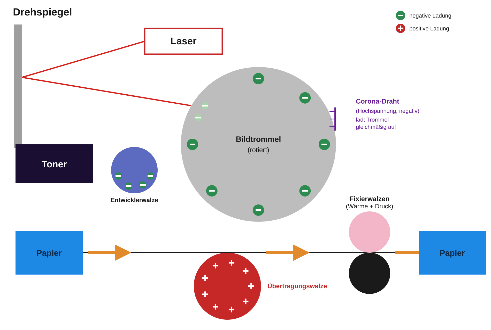

Physik · Qualifikationsphase Q1 – Geladene Teilchen in Feldern
Wie funktioniert ein Laserdrucker?
Einstieg: Elektrostatik in der Alltagstechnik
Ein Laserdrucker ist ein faszinierendes Beispiel für Elektrostatik im Alltag. Er verbindet Ladung und Entladung, Anziehung und Abstoßung sowie Licht, Wärme und mechanische Bewegung zu einem präzisen Druckprozess. Nutze dein Vorwissen aus der Elektrizitätslehre (Jahrgangsstufen 6–10) und aus der Mechanik (EF), um die Fragen zu bearbeiten.
Der Druckprozess im Überblick

Wie möchtest du die Aufgaben bearbeiten?
Wähle, ob deine Ergebnisse in der Datenbank gespeichert werden sollen.
🔐 Mit Anmeldung – Ergebnisse speichern
Melde dich mit deiner Schul-E-Mail-Adresse an. Am Ende kannst du deine Antworten speichern und beim nächsten Besuch wieder laden.
👤 Ohne Anmeldung – nicht gespeichert
Bearbeite die Aufgaben direkt, ohne dich anzumelden. Du erhältst wie gewohnt sofort Feedback zu jeder Aufgabe – deine Ergebnisse gehen aber beim Schließen der Seite verloren.
Anmelden
Gib deine Schul-E-Mail-Adresse und dein Passwort ein.
Angemeldet als
ℹ️ Du bearbeitest die Aufgaben ohne Anmeldung. Deine Antworten werden nicht gespeichert und gehen beim Schließen der Seite verloren.
Teil 1 – Grundlagen der Elektrizitätslehre
Prüfe dein Wissen zur Elektrizitätslehre aus der Sekundarstufe I. Alles kinderleicht? Dann wende dieses Wissen an und versuche dich in Teil 2 an den Aufgaben zum Laserdrucker.
Aufgabe 1Multiple Choice
Ihr habt in der Sekundarstufe I bereits einiges über elektrische Ladung gelernt. Welche der folgenden Aussagen sind korrekt?
Mehrere Antworten können richtig sein.
Aufgabe 2Multiple Choice
Welche der folgenden Aussagen zum elektrischen Strom sind korrekt?
Mehrere Antworten können richtig sein.
Aufgabe 3Multiple Choice
Welche der folgenden Aussagen zur Reibungselektrizität und zur Wirkung geladener Körper auf ungeladene Körper sind korrekt?
Mehrere Antworten können richtig sein.
Aufgabe 4Multiple Choice
Welche der folgenden Aussagen zum elektrischen Feld sind korrekt?
Mehrere Antworten können richtig sein.
Aufgabe 5Multiple Choice
Welche der folgenden Aussagen zur elektrischen Spannung sind korrekt?
Mehrere Antworten können richtig sein.
Teil 2 – Funktionsweise des Laserdruckers
Wende dein Wissen jetzt auf den Laserdrucker an und verfolge Schritt für Schritt, wie mithilfe von Ladung, Licht und Wärme ein Blatt Papier bedruckt wird.
Aufgabe 6Multiple Choice
Betrachtet in der Abbildung den Tonerbehälter.
Welche der folgenden Aussagen über den Toner und seine Aufladung sind plausibel?
Mehrere Antworten können richtig sein.
Aufgabe 7Multiple Choice
Auf der Bildtrommel, deren Kern typischerweise aus Aluminium besteht, sitzt eine dünne Schicht aus einem sogenannten Fotoleiter, die zuvor gleichmäßig negativ aufgeladen wurde. Der Laser trifft nun einzelne Punkte dieser Schicht.
Welche der folgenden Aussagen sind plausibel bzw. korrekt?
Mehrere Antworten können richtig sein.
Aufgabe 8Multiple Choice
Damit die Bildtrommel gleichmäßig geladen werden kann, muss sie in Wechselwirkung mit einem Bauteil gebracht werden, das eine sehr hohe negative Spannung gegenüber der Trommel trägt. Bei der einen Lösung handelt es sich um einen extrem dünnen Draht (Corona-Draht), an dem durch das starke elektrische Feld eine sogenannte Corona-Entladung auftritt; die dabei entstehenden ionisierten Luftteilchen wandern zur Trommel. Bei der anderen Lösung handelt es sich um eine Walze, die die Trommel direkt oder nahezu berührt. In beiden Fällen kommt es durch die hohe Spannungsdifferenz zu einer Entladung, bei der Ladungsträger auf die Trommel übertragen werden.
Welche der folgenden Aussagen sind korrekt?
Mehrere Antworten können richtig sein.
Aufgabe 9Multiple Choice
Bevor der Toner auf die Bildtrommel gelangt, sitzt er auf einer sogenannten Entwicklerwalze. Auch diese Walze trägt eine definierte, negative Spannung. Betrachtet folgende drei Spannungsniveaus: Die unbelichteten Bereiche der Trommel sind weiterhin stark negativ geladen (z. B. −600 V), die belichteten Bereiche sind nur noch schwach negativ geladen, also fast neutral (z. B. −100 V). Die Entwicklerwalze liegt mit ihrer Spannung genau zwischen diesen beiden Werten (z. B. −350 V). Auf ihr sitzt der negativ geladene Toner.
Welche der folgenden Aussagen sind korrekt?
Mehrere Antworten können richtig sein.
Aufgabe 10Multiple Choice
Damit der Toner von der Bildtrommel auf das Papier wechselt, befindet sich hinter dem Papier eine Übertragungswalze, die positiv geladen ist. Nach der Übertragung ist der Toner jedoch noch nicht dauerhaft mit dem Papier verbunden – dafür sorgt erst die anschließende Fixiereinheit, durch die das Papier hindurchläuft.
Welche der folgenden Aussagen sind korrekt?
Mehrere Antworten können richtig sein.
Aufgabe 11Sortieraufgabe
Bringe die sechs Schritte des Laserdruckprozesses in die richtige Reihenfolge.
Ziehe die Karten per Drag & Drop an die richtige Position.